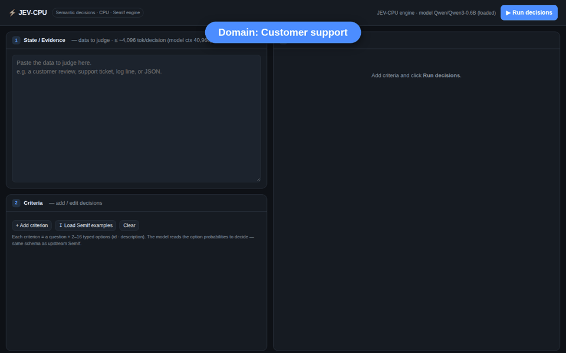
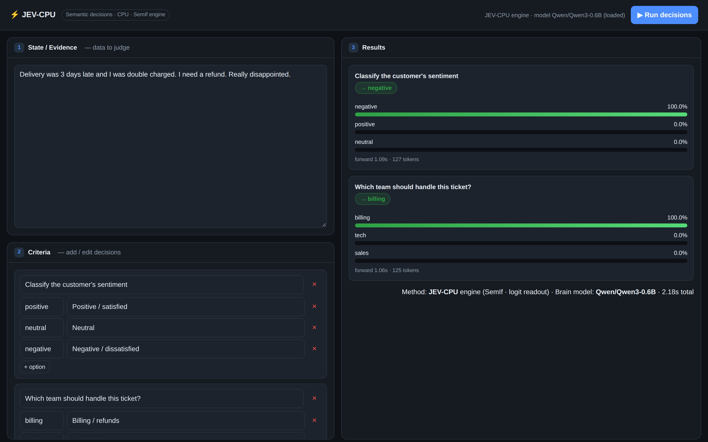

Abstract. Semantic-if decisions — route this, is this a policy violation, what severity is this incident — are usually answered by having a chat model generate text that software then parses back into a branch. SemIf (an open reproduction of TypeSafe's Jev pattern) instead reads a decision directly from a model's option logits in a single forward pass, with no text generated. SemIf targets a GPU holding a 4B model. This report describes JEV-CPU, a small adaptation that runs the same engine on a commodity CPU with a 0.6B open model, and reports measurements from an 8 GB, GPU-less machine: qualitative decisions across eight domains, a latency-versus-input-length curve, and the resulting practical input ceiling. We make no claim of methodological novelty — the contribution is engineering and empirical: showing the method is device-agnostic, quantifying where CPU latency (not memory or the model) becomes the limit, and documenting how accuracy scales with model size. All code, weights pointer, and demos are public.

Qwen3-0.6B's option logits in ~1 s — no text generated.Most decisions inside software agents are small and typed: choose a queue, pick a severity, decide
whether evidence supports a claim. A chat model can answer them, but generating an answer sentence and
parsing it back into an if is slow and brittle. A decision-native alternative is to
present the options as tokens and read the model's probability over exactly those tokens in one forward
pass. TypeSafe's closed Jev service popularized this interface; SemIf
reproduces the interface pattern with open models on a GPU.
This report asks a narrow, practical question: does the method still work with no GPU and a tiny model, and where does it break down? We port SemIf's scoring to CPU (§4), run it across eight domains (§5), and measure the latency wall that determines the usable input size (§6).
Reading a categorical decision from an LM's next-token distribution — rather than sampling text — is a well-established idea (verbalizer-style zero-shot classification, answer-token scoring, NLI cross-encoders). We claim no novelty for the mechanism. JEV-CPU is a CPU adaptation and empirical study of SemIf, which is itself an independent reproduction of the Jev pattern; Jev and TypeSafe are the property of their owners and are not affiliated with this work.
A decision is one record: a state (evidence), a question (criterion), and
2–16 typed options. The direct scoring path is unchanged from SemIf:
A, B,
C… in a chat turn whose system instruction asks for a single uppercase letter and nothing
else. With the generation prompt applied, the next token the model would emit is the answer letter.logits = model(**inputs, use_cache=False).logits[:, -1, :] # (vocab,)
selected = logits[slot_ids] # logits at tokens A, B, C, ...
probs = softmax(selected) # distribution over the declared options
winner = options[argmax(probs)]Because it is one forward pass reading fixed positions, latency is dominated by prompt prefill, not by generation length — the property JEV-CPU relies on to stay usable on a CPU.
SemIf forces a GPU in exactly one place — its model loader checks for a single CUDA device and loads with
device_map={"":"cuda:0"}, bfloat16. Everything downstream is device-agnostic: the
scoring code follows device = next(model.parameters()).device and the only CUDA-specific call,
torch.cuda.synchronize(), is guarded by if device.type == "cuda" (a no-op on CPU).
JEV-CPU therefore changes only the loader: a CPU / float32 loader that reuses
SemIf's original, unmodified scoring functions. A small standard-library web server exposes the engine with a
three-pane UI (state, criteria, results). Swapping the model is a one-line change (MODEL = …);
the engine and UI are model-agnostic.

Using Qwen/Qwen3-0.6B in float32 on CPU, we ran the same engine across eight
domains (Figure 1). Each decision took ≈1 s.
| Domain | Criterion | Decision | Forward |
|---|---|---|---|
| Customer support | Sentiment | negative — 97.4% | ~1.1 s |
| Customer support | Route to team | billing — 100% | ~1.0 s |
| Content moderation | Policy violation? | violation — 99.3% | ~1.1 s |
| Content moderation | Recommended action | warn — 69.2% | ~1.0 s |
| Code-review triage | Merge risk | high — 99.8% | ~1.2 s |
| Code-review triage | PR disposition | block — 94.9% | ~1.1 s |
| Incident / DevOps | Severity | sev1 — 100% | ~1.2 s |
| Incident / DevOps | Page on-call now? | page_now — 100% | ~1.1 s |
| Email intent | Primary intent | sales — 100% | ~1.2 s |
| Compliance gate | Change ticket required? | required — 100% | ~1.1 s |
| Loan / credit risk | Credit risk | high — 100% | ~1.2 s |
| Loan / credit risk | Recommended decision | approve — 82.8% ⚠︎ | ~1.1 s |
| Support prioritization | Priority | p1 — 100% | ~1.2 s |
These are single illustrative runs, not a benchmark; they show the interface and the qualitative behavior. The loan decision row is a deliberate example of a small-model slip (see §8).
Two numbers are often conflated. The model's context window is 40,960 tokens — large even at 0.6B, since context length comes from positional encoding, independent of parameter count. SemIf's engine applies a default cap of 4,096 tokens per decision as a guard (over-long prompts raise instead of being silently truncated); it is configurable. Neither is the real constraint on CPU.
We measured one decision with a growing state on the 8 GB CPU box (peak RSS via getrusage):
| Input tokens | Forward (CPU) | Peak RAM |
|---|---|---|
| 254 | 2.5 s | ~3.5 GB |
| 731 | 5.6 s | ~3.5 GB |
| 1,363 | 11.9 s | ~3.5 GB |
| 2,629 | 26.0 s | ~3.5 GB |
| 5,165 | 66.1 s | ~3.5 GB |
| 7,697 | 117.4 s | ~3.5 GB |
RAM stayed flat at ~3.5 GB with no OOM even at 7,697 tokens — well past the 4,096 default — so the ceiling on this box is prefill latency (roughly quadratic in length), not memory or the model.
Qwen3-0.6B is the smallest model on SemIf's ladder, chosen to fit in CPU RAM; it is the
accuracy floor, not the ceiling. From SemIf's own evaluation:
| Brain model | Size | Authored balanced acc. | TypeSafe subset agr. |
|---|---|---|---|
| Qwen3-0.6B (JEV-CPU default) | 0.6 B | 0.440 | 0.407 |
| MiniCPM5-2B | 2 B | 0.686 | 0.637 |
| Qwen3.5-4B | 4 B | 0.813 | 0.845 |
Because the engine is model-agnostic, moving up the ladder is a one-line change — at the cost of RAM and compute that exceed this CPU box (a 4B model wants a GPU, SemIf's target). The takeaway: JEV-CPU shows the method runs anywhere; accuracy scales with the model you point it at.
Decision-native, logit-readout inference is not tied to a GPU or a large model. With only a loader change, SemIf's engine runs on a commodity CPU with a 0.6B model, decides across many domains at ~1 s each, and stays memory-stable well past its default token cap. On this hardware the honest limit is latency: inputs above ~7,700 tokens cross the ~120 s mark and are impractical, and small-model accuracy — not context or memory — is what improves by scaling the model up. JEV-CPU is offered as a reproducible, minimal demonstration of that.
Code, the web UI, the exact scripts behind §5–§6, and all demo GIFs are public:
python3 -m venv .venv && source .venv/bin/activate
pip install --index-url https://download.pytorch.org/whl/cpu torch
pip install transformers accelerate
python semif_cpu.py # CLI: typed option probabilities
python server.py # web UI on http://localhost:8080